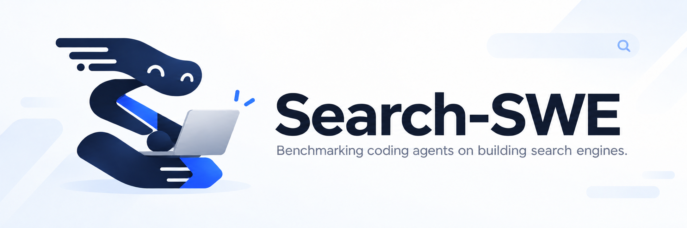

Search-SWE

Search-SWE evaluates whether coding agents can implement and optimize real search systems under fixed resource constraints.
Introduction
Search is a core capability in AI agent applications, from retrieving evidence for research assistants to locating code for software agents and grounding enterprise assistants in internal knowledge. Yet building an effective search system—or improving an existing one—requires substantial engineering expertise: choices in query understanding, indexing, retrieval, and ranking must balance relevance with latency and resource use. As coding agents become part of everyday software development, a natural question arises: can they also engineer effective search systems?
We introduce Search-SWE, a benchmark for evaluating coding agents on implementing and optimizing executable search systems. Its design centers on explicit task contracts, reproducible environments with fixed inputs, and task-specific resource budgets. Agents inspect their environment, write and test code, and iterate; a separate verifier evaluates the resulting system on held-out queries, checking functionality, retrieval quality, efficiency, and compliance with task rules. The benchmark measures working systems and the practical quality–efficiency trade-offs made during development.
Search-SWE in Action
Open interactive demoThis demo follows long-document reranking end to end—showing how a coding agent interprets the specification, experiments with solutions, and submits a working system for isolated verification and held-out evaluation.
Tasks
View all tasksExplore tasks spanning query understanding, retrieval, ranking, and representation learning.
- Reasoning-intensive Query Rewriting Rewrite complex biology queries to bridge the gap between query intent and relevant documents.
- Memory-constrained Dense Retrieval Search 1.5M vectors within 512 MiB of memory and a 64 MiB index workspace while meeting quality and latency gates.
- Long-document Reranking Improve long-document reranking through window selection and score aggregation, with a fixed model and candidate set.
- Code Embedding Fine-tuning Fine-tune a pretrained embedder for code retrieval while preserving its backbone architecture.
Contributing
Contribution guideWe welcome contributions to tasks, tools, shared environments, tests, and documentation. New tasks should include clear instructions, reproducible environments, fixed inputs and a separate verifier. Start with the agent workflow and the create-searchswe-task skill for authoring and validation.
- Create a task in your branchCreate the package directly at
tasks/<task-name>. Choose a descriptive name of at most five lowercase hyphen-separated words, beginning with a letter. Thetask-prefix andallare reserved. Check names against the current base and active PRs. A PR may add multiple uniquely named tasks; record actual authors in each package. Keep ordinary task contributions within their package; shared docs and tests discover tasks automatically. - Build a reproducible packageSpecify interfaces, metrics, and resource limits; isolate the verifier from the agent. Include a task-specific grader and a verifier-side trajectory integrity audit, even for deterministic task metrics. Follow the contribution guide’s required README sections and versioned change log. Fixed inputs may reference existing public upstream Hugging Face datasets directly. Document provenance and usage terms, and pin each exact filename, immutable 40-character commit SHA, size and SHA-256. New development assets may use a personal public dataset with redistribution permission. Keep credentials, downloaded inputs/models and run outputs out of Git; keep held-out evaluation data inaccessible to submitted programs.
- Test with a coding model and refineRun package checks, unit tests, container checks and verifier positive and negative cases, then an authorized coding-model trial. Use
--task <task-name>for downloads and trials. Inspect trajectories, scores and judge health; use the findings to refine the task setting and revalidate substantive changes. The authoring agent prompts contributors to configure any missing API keys locally. Keep a task-rootVALIDATION.mdevidence index recording grader checks, model feedback, resulting revisions, validation of the final setting and unrun checks. Link this evidence in the PR, and enable maintainer edits where available. - Review, finalize and mergeMaintainers use the
maintain-searchswe-taskskill to review each task and its validation evidence. Apply review fixes in the same PR, retain verified upstream pins, and verify downloads, hashes and merge-ready checks for the final revision. Official publication is optional; when needed, publish undertasks/<task-name>/and pin the merged official Hugging Face SHA before merging the task PR. Use a merge commit to preserve author history.
Before scaffolding, inspect one or two closest reviewed tasks already merged into main, chosen by objective, grader, resources/APIs, hardware, and input/artifact layout. Record their paths and relevance, and use them only as structural references: current guides, schemas, and validators take priority. Independently establish task-specific data, thresholds, licenses, Hugging Face pins, names, authors, and access policies rather than copying them. If no close reference exists, say so.
Evaluation
To run an evaluation, follow the repository’s Quick Start : install the host tools, restore task inputs, configure credentials, and launch a task. The walkthrough runs reasoning-query-rewriting on CPU with Pi and DeepSeek Flash; Python 3.12+ and Docker are required.
Search-SWE uses Harbor to evaluate coding agents through the supported Codex CLI, Pi, and Claude Code launchers in isolated environments. Agents develop solutions using supplied data and public checks. Submissions are then tested on held-out queries, with task-specific correctness, resource, and integrity checks determining whether their search-quality scores are valid.
| Dimension | What is checked |
|---|---|
| Build & function | Reproducible execution, valid inputs and outputs, and functional correctness. |
| Search quality | Retrieval performance on held-out queries using task-specific metrics. |
| Resource limits | Task-specific time, CPU/GPU, memory, storage, and network constraints. |
| Evaluation integrity | Integrity and jailbreak checks for attempts to bypass task rules or manipulate evaluation. |
Results. The leaderboard is being prepared.